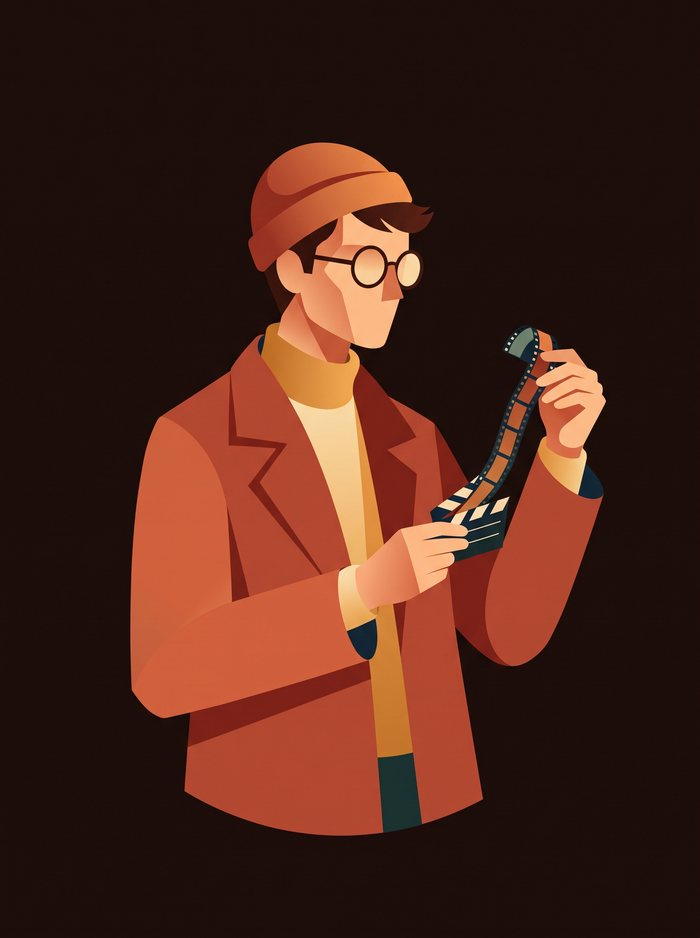

Cuando salen los créditos…
Mazo terminado
DIARIO DE UNA SESIÓN
{{D.line}}

{{D.theme}}
{{D.summary}}
{{nC}} de 10 elegidas
Tu sesión, en corto
{{nW}}
quieres ver
{{nS}}
ya la viste
{{nP}}
dejaste pasar
Las que quieres ver
Verlas en Ver →Ticket del mazo
{{D.theme}} · {{nC}} de 10 elegidas
Afinidades de tus elecciones
Temas presentes en las {{nC}} películas elegidas.
{{aff.0.n}}
{{aff.0.c}}
{{aff.0.w}}%
{{aff.1.n}}
{{aff.1.c}}
{{aff.1.w}}%
{{aff.2.n}}
{{aff.2.c}}
{{aff.2.w}}%
Los temas pueden coincidir. Hablan de estas películas, no de tu personalidad.